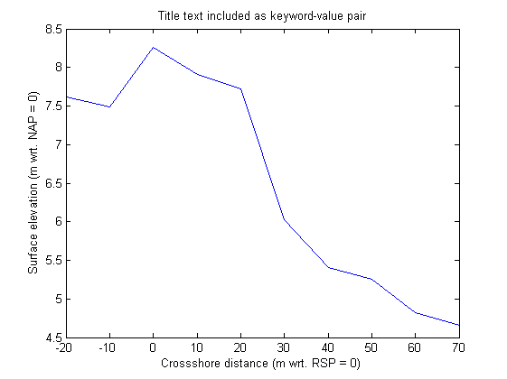
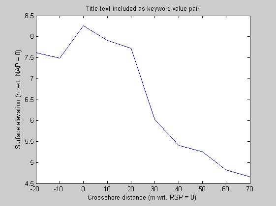
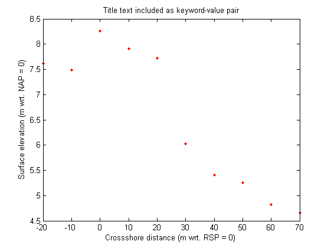

Using keyword value pairs
as an example, we can define our own varargin (this is what normally would be read by the function we are calling)
varargin = {'title_text','Title text included as keyword-value pair'};
Within the function, first the default properties for all possible input arguments are set
OPT = struct(... 'xInitial', (-20:10:70)', ... 'zInitial', [7.62 7.49 8.26 7.91 7.72 6.03 5.41 5.26 4.82 4.66],... 'title_text', 'Default plot title', ... 'xlabel_text', 'Crossshore distance (m wrt. RSP = 0)', ... 'ylabel_text', 'Surface elevation (m wrt. NAP = 0)');
then setproperies is used to overwrite default settings
OPT = setProperty(OPT, varargin{:});
This is clear when we make the plot
figure;clf plot(OPT.xInitial, OPT.zInitial); xlabel(OPT.xlabel_text) ylabel(OPT.ylabel_text) title(OPT.title_text)
Wrong keywords
if we define a wrong input argument, we get an error message:
varargin = {'line_spec','.r'};
try
OPT = setProperty(OPT, varargin{:});
catch
lasterr
end
ans = Error using ==> setProperty at 139 PropertyName "line_spec" is not valid
%this will only work if we include it in the function first varargin = {'title_text','Title text included as keyword-value pair'}; OPT = struct(... 'xInitial', (-20:10:70)', ... 'zInitial', [7.62 7.49 8.26 7.91 7.72 6.03 5.41 5.26 4.82 4.66],... 'title_text', 'Default plot title', ... 'xlabel_text', 'Crossshore distance (m wrt. RSP = 0)', ... 'ylabel_text', 'Surface elevation (m wrt. NAP = 0)',... 'line_spec', ''); %default value is empty OPT = setProperty(OPT, varargin{:}); figure;clf plot(OPT.xInitial, OPT.zInitial,OPT.line_spec); xlabel(OPT.xlabel_text) ylabel(OPT.ylabel_text) title(OPT.title_text)
Multiple keywords
and now with extra arguments defined:
varargin = {'title_text','Title text included as keyword-value pair','line_spec','.r'};
OPT = struct(...
'xInitial', (-20:10:70)', ...
'zInitial', [7.62 7.49 8.26 7.91 7.72 6.03 5.41 5.26 4.82 4.66],...
'title_text', 'Default plot title', ...
'xlabel_text', 'Crossshore distance (m wrt. RSP = 0)', ...
'ylabel_text', 'Surface elevation (m wrt. NAP = 0)',...
'line_spec', ''); %default value is empty
OPT = setProperty(OPT, varargin{:});
figure;clf
plot(OPT.xInitial, OPT.zInitial,OPT.line_spec);
xlabel(OPT.xlabel_text)
ylabel(OPT.ylabel_text)
title(OPT.title_text)
